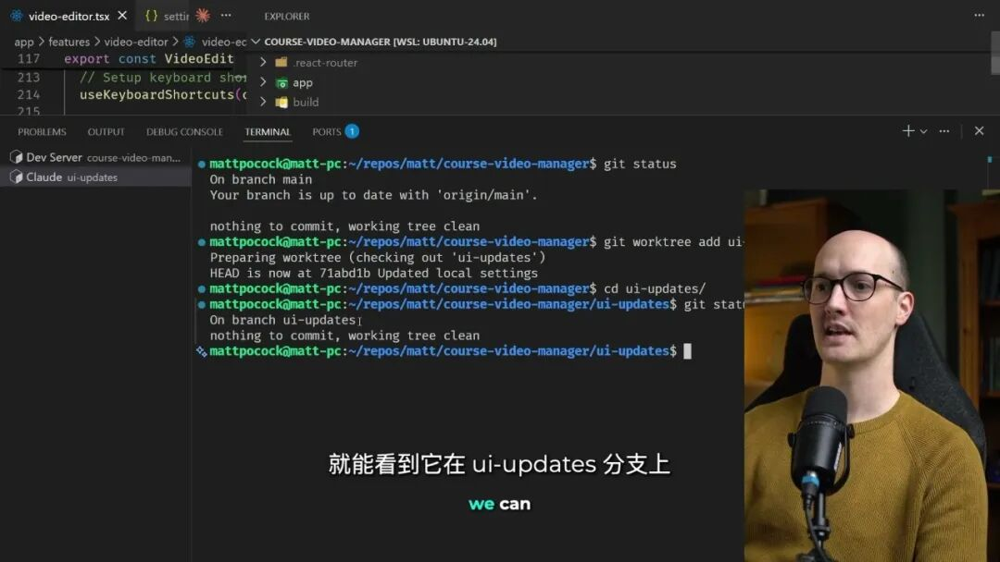
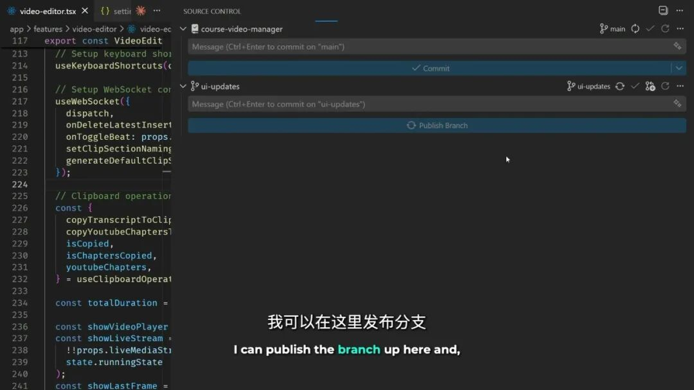
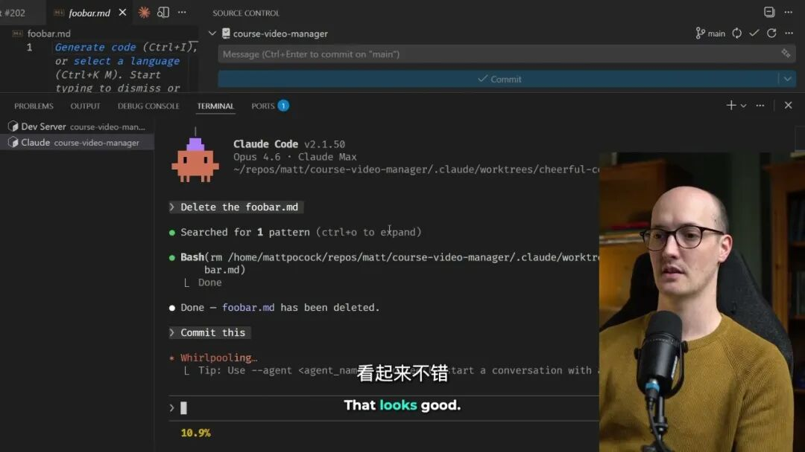
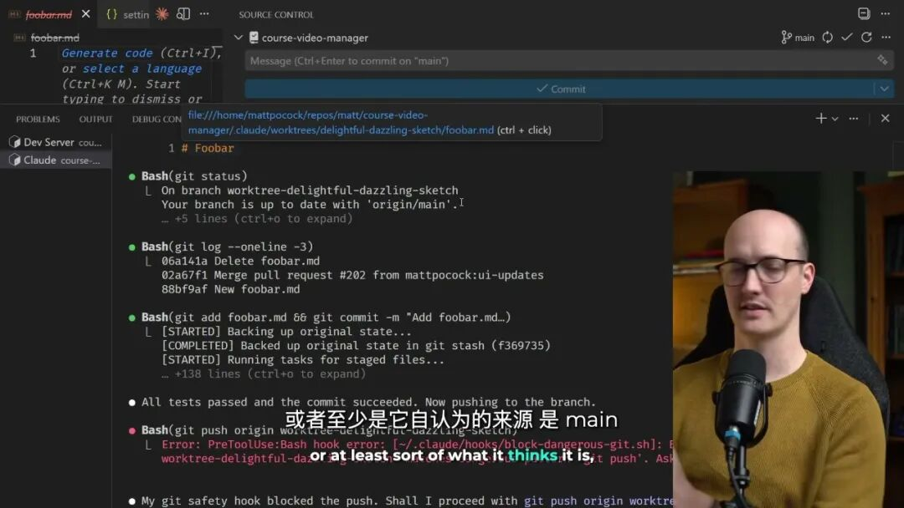

一个项目，三个 Agent 同时跑：一个改 UI，一个修 Bug，一个重构模块。各自提交，各自发 PR，互不干扰。
这件事的基础设施是 Git Worktree。Claude Code 把它封装成了一条 --worktree 参数，不用手动管分支和目录。
这篇先把 Worktree 的概念讲清楚，再上手操作，最后说一个很容易踩的坑。
平时用 Git，一个仓库在磁盘上对应一个目录。想同时看两个分支的代码，要么 git stash 再切，要么 git clone 一份新的。
Git Worktree 做的事情很直接：一个仓库可以同时检出多个分支，每个分支对应磁盘上一个独立的目录。这些目录共享同一个 .git 仓库，但各自有独立的工作区和暂存区。
打个比方：以前你有一张桌子，上面只能摊一个项目的资料。想看另一个项目，得先把当前的收起来。Worktree 相当于给你加了几张桌子，每张桌子上摊不同分支的代码，互相不影响。
对 AI 编程来说，这个能力刚好对上了一个实际问题：多个 Agent 同时改一个项目时，如果都在同一个目录里操作，文件会互相覆盖。每个 Agent 一个 Worktree，冲突就不存在了。
手动操作一遍
先用原生 Git 走一遍流程，建立直觉。
在项目根目录执行：
git worktree add ui-updates这条命令做了两件事：创建一个名为 ui-updates 的新目录，同时创建并检出一个同名分支。进到这个目录里看一眼：
cd ui-updates
git status
# On branch ui-updates
这个新目录是一个完整的工作区。你可以在里面改代码、暂存、提交，和主目录完全独立。
如果你用 VS Code 或 Cursor，打开源代码管理面板会看到两个仓库：一个是 main 分支的主工作区，一个是 ui-updates 分支的 Worktree。可以在 IDE 里直接提交、发布分支、发 PR，不用切到终端。

PR 合并之后，在主目录 git pull 就能拿到 Worktree 里的改动。
用完之后清理：
git worktree remove ui-updates整个过程就是：建 Worktree → 在里面干活 → 提交发 PR → 合并后删 Worktree。
Claude Code 的 --worktree
理解了原理，再看 Claude Code 的封装就很清楚了。
claude --worktree一条命令，Claude Code 自动在 .claude/worktrees/ 下创建一个 Worktree，名字是随机生成的，比如 cheerful-coalescing-worth。底层用的就是 git worktree add。

在这个 Worktree 里，你可以正常给 Claude Code 下指令：改文件、运行测试、提交代码。它的工作完全限制在这个独立目录里，不会动你主工作区的任何东西。
退出时（Ctrl+C），Claude Code 会问你：保留还是删除这个 Worktree？ 如果已经把改动推送到了远程分支，删掉就行，代码已经安全了。如果还没推，删掉意味着所有本地提交都会丢失。
每个 Worktree 的生命周期绑定到一次任务。有个想法就开一个，做完发 PR，合并后删掉。这比以前手动管分支和目录轻松很多。
一个必须知道的坑：推送到哪个分支
Matt Pocock 在实测中踩了一个坑：用 --worktree 创建的工作区，默认的上游分支是 main。
如果你只说 git push，改动会被推到 main，而不是你以为的独立分支。main 没有分支保护的话，代码直接就上去了。

解决方法很简单：推送时指定分支名。
git push origin worktree-delightful-dazzling-sketch或者在给 Claude Code 下指令时就说清楚：提交并推送到独立分支，然后发一个 PR 到 main。这样 Claude Code 会用正确的分支名推送。
建议在 main 分支上开启保护规则，要求通过 PR 才能合并。这是最后一道防线，不管 Agent 怎么推，都不会意外污染主分支。
Subagent 也能用 Worktree
Claude Code 的子代理（Subagent）同样支持 Worktree。
实际用起来是这样的：你给主 Agent 一个大任务，它拆成几个子任务，每个子任务启动一个 Subagent。每个 Subagent 在自己的 Worktree 里工作，做完各自发 PR，最后统一合并到 main。
不过这个能力需要你主动要求，Claude Code 不会自动给 Subagent 分配 Worktree。在提示词里明确说让它用 Worktree 就行。
什么时候该用，什么时候没必要
并不是每次用 Claude Code 都得加 --worktree。
适合用的场景：同时推进多个独立任务，比如一边加功能一边修 Bug；或者想让改动和主工作区隔离，做完再决定要不要合进来。
没必要用的场景：只有一个任务在跑，而且你不介意它直接在当前目录改代码。
用了 --worktree 之后，你的工作方式会变成：想到一个事情就开一个 Worktree，让 Agent 去做，做完发 PR。主工作区始终干净，随时可以开下一个。
如果这篇文章你觉得还不错，随手点个赞、在看、转发三连吧，如果想第一时间收到推送，也可以给我个星标⭐～谢谢你看我的文章，我们，下期再见。